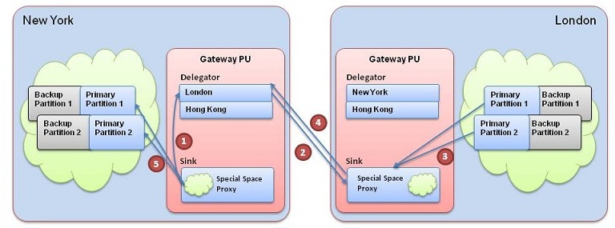
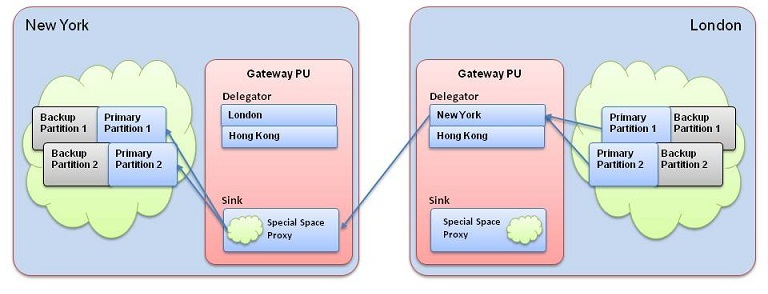

Bootstrapping a site from another site is a process in which one site space is starting fresh and it is being populated with the data of another site space. This can be useful after a very long disconnection where the replication redo-log in the source spaces that replicates to this site was dropped due to breaching capacity limitations, and the disconnected site should start fresh. Or some initiated downtime due to some maintenance of one site which should bootstrap once it is restarted.
A bootstrap of a site is being done via a gateway sink of that site and the gateway sink of the site that the bootstrap should be done from. Therefore, both sites must have a deployed gateway sink.
The bootstrap target site gateway sink will locate the gateway sink of the bootstrap source site (using the local gateway delegator to that sink) and it will use the bootstrap source site gateway sink in order to initiate a recovery process from each partition primary space instance. All the data that will be received during the bootstrap process into the sink will be inserted to the local space.
All the changes that are done in the bootstrap source site during this copy process are accumulated at the replication redo-log and will be sent via the bootstrap source site delegator to the bootstrap target site sink once the copy stage is complete. During the bootstrap copy stage, the gateway sink which is being bootstrapped will not be available for replication, and all the remote sites local spaces will have a disconnected replication channel to that gateway sink.

NY Sink initiates bootstrap process from the London GW
The NY London GW sends the requests to the London Sink over the WAN
The London Sink start reading data from the local London cluster
The London sink sends the data to the NY London GW
The GW sends it to the sink which pushes it to the local NY cluster

Unlike regular space recovery, where a backup or replicated space performs a recovery, a bootstrap has much more implications and therefore it is an administrative command executed by the user on demand.
The bootstrap is initiated on the local gateway sink of the space's site that needs to be bootstrapped for another site's space. The following conditions should be held before initiating a bootstrap:
The space that is being bootstrapped should be first cleared of all data, a recommended way to do so is by redeploying that local space (any entry which is not cleared will not be updated during the copy stage of the bootstrap process, it will be skipped).
The space that is being bootstrapped should not be active during the bootstrap copy stage, which means it should not update the incoming data during the bootstrap stage. It is up to the user to make sure this condition is held.
At the bootstrap target site there should be a gateway sink configured with the bootstrap source gateway as one of its sources and there should be a delegator to that source.
At the bootstrap source site there should be a gateway sink (no need to configure the bootstrap target as a source if it is not supposed to replicate into the source site), and there should be a delegator from the source site to the target site.
The gateway sink at the bootstrapping site needs to be configured with requires-bootstrap=true, it should look as follows:
<os-gateway:sink id="sink" local-gateway-name="NEWYORK"
gateway-lookups="gatewayLookups"
local-space-url="jini://*/*/myNYSpace" requires-bootstrap="true">
<os-gateway:sources>
<os-gateway:source name="LONDON" />
<os-gateway:source name="HONGKONG" />
</os-gateway:sources>
</os-gateway:sink>
After meeting the condition specified in the previous, the bootstrap should be initiated using the Admin API. Following is an example of how to bootstrap New-York from London:
//Create an admin to the local environment
Admin admin = new AdminFactory().create();
Gateway newyorkGateway = admin.getGateways().waitFor("NEWYORK");
GatewaySinkSource londonSinkSource = newyorkGateway.waitForSinkSource("LONDON");
BootstrapResult bootstrapResult = londonSinkSource.bootstrapFromGatewayAndWait(3600, TimeUnit.SECONDS);
The bootstrap method will block until the bootstrap is completed and the result will specify whether the bootstrap completed successfully or some error occurred, such as timeout.
When a gateway sink is started with requires-bootstrap state, it will not be open for incoming replication until a bootstrap was initiated, which means remote sites spaces incoming replication channels will be disconnected. It is possible to enable incoming replication to a gateway sink in that state without initiating a bootstrap by calling the enableIncomingReplication. For example:
//Create an admin to the local environment
Admin admin = new AdminFactory().create();
Gateway newyorkGateway = admin.getGateways().waitFor("NEWYORK");
GatewaySink sink = newyorkGateway.waitForSink("LONDON");
sink.enableIncomingReplication();
Once a gateway sink has executed a bootstrap process or the enableIncomingReplication was called, it cannot execute a bootstrap process again because it is already open for incoming replication.
The bootstrap process requires the sink to be at a disabled state to prevent from ongoing replication interfering with the bootstrap first copy stage. Therefor a sink must be restarted for bootstrap if the above occurred.